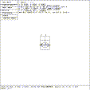
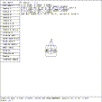
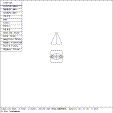
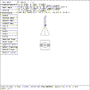

 Figure (wm-hat1): Funnel Bowl Cylinder After Rotation
The solid ``cylinder'' has a height vector (``H'') which is 2mm long. This will be used to good advantage, to make the Tin Woodsman's funnel hat, with the bowl of the funnel being 2mm high, and the tube of the funnel being 2mm long. The tube of the funnel will point straight up the +Y axis.
mged> sed c.1
mged> Select the ``Rotate'' entry in the solid edit menu
mged> p 0 45 90
mged>
This places the cylinder so that the lines BD and AC are at the outer ends of the cylinder. See Figure (wm-hat1) .
 Figure (wm-hat2): Funnel Bowl Cylinder After End Scaling
Next, the cylinder is shaped to look like the top of a funnel. The vectors c and d are scaled.
Select the ``edit menu'' entry in the solid edit menu
Select the ``scale c'' entry in the TGC menu
mged> p .1
Select the ``scale d'' entry in the TGC menu
mged> p .1
mged>
Figure (wm-hat2) is the new shape of the cone. Note how the on-screen display records the new lengths of the ``c'' and ``d'' vectors. This cone must be moved to the planned locations for the top of the head.
 Figure (wm-hat3): Funnel Bowl Cylinder After Moving
Select the ``Translate'' entry in the solid edit menu
mged> p 0 2.2 0
Select the ``ACCEPT Edit'' entry in the button menu
mged>
The bottom of the hat is now properly shaped and positioned. The new version of the solid ``c.1'' has been saved in the model database. The editor returns to the viewing state. See Figure (wm-hat3) .
A copy of the saved ``c.1'' cone is made. A byproduct of the cp command is to display the new solid, as if the cp c.1 c.2 command had been immediately followed by an e c.2 command. This new solid will be edited to make the neck of the funnel, which is the top of the hat. The ``c.2'' copy of the cone must be scaled down to become a tube and the tube must be placed on top of the cone ``c.1''.
 Figure (wm-tube): Funnel Tube Scaled and Positioned
mged> cp c.1 c.2
mged> sed c.2
Select ``scale A,B'' in the TGC menu
mged> p 0.1
Select ``Translate'' in the Solid Edit menu
mged> p 0 4.2 0
Select ``ACCEPT Edit'' in the Button menu
mged>
Figure (wm-tube) is the new shape of the funnel tube. The woodsman's hat is comprised of solids c.1 and c.2.
{kind=link}
{kind=link}
{kind=link}
{kind=link}